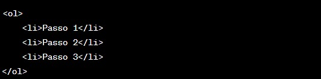
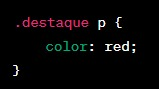

Introdução a HTML e CSS
Este é o início da nossa apostila introdutória sobre HTML e CSS.
Tags HTML
Aqui estão alguns exemplos de tags HTML:
Imagens em Html
A tag <"img"> indica para o navegador que uma imagem deve ser "renderizada" (mostrada/desenhada) naquele lugar e necessita dois atributos preenchidos: src e alt . O primeiro é um atributo obrigatório para exibir a imagem e aponta para a sua localização (pode ser um local do seu computador ou um endereço na Web), já o segundo é um texto alternativo que aparece caso a imagem não possa ser carregada ou visualizada
Listas HTML
Em HTML, você pode criar listas para organizar informações de várias maneiras. Existem dois tipos principais de listas: listas ordenadas e listas não ordenadas. Aqui está como criar ambos os tipos de listas:
- Listas Não Ordenadas (ul)
- Listas Ordenadas (ol)
- Listas de Definição (dl, dt, dd)
Resultado:
Item 1
Item 2
Item 3
Resultado:
Passo 1
Passo 2
Passo 3 
Resultado:
Termo 1
Definição 1
Termo 2
Definição 2
Termo 3
Definição 3
Cabecalhos
As tags <'h1'>, <'h2'>, e <'h3'> são usadas em HTML para criar cabeçalhos e subcabeçalhos em uma página da web. Esses elementos de cabeçalho têm uma hierarquia, onde <'h1'> é o cabeçalho principal (o mais importante), <'h2'> é um cabeçalho de segundo nível (um pouco menos importante), e <'h3'> é um cabeçalho de terceiro nível (menos importante ainda).
- <'h1'> - Cabeçalho de primeiro nível: O <'h1'> é usado para o título principal da página. Deve haver apenas um <'h1'> por página, e ele geralmente representa o título da página ou o título principal da seção.
- <'h2'> - Cabeçalho de segundo nível: O <'h2'> é usado para criar subcabeçalhos que são menos importantes que o título principal, mas ainda assim são relevantes para a página ou seção.
- <'h3'> - Cabeçalho de terceiro nível: O <'h3'> é usado para criar subcabeçalhos de terceiro nível, que são menos importantes que os <'h2'>, mas ainda assim relevantes para a estrutura da página.

Seletores CSS
Seletores CSS são padrões usados para selecionar elementos HTML específicos que você deseja estilizar com regras de estilo CSS. Os seletores permitem que você aplique estilos a elementos específicos com base em critérios como a tag HTML, a classe, o ID ou outros atributos. Aqui estão alguns dos seletores CSS mais comuns:
- Seletores de Tag: Esses seletores aplicam estilos a todos os elementos de uma tag específica. Por exemplo:
- Seletores de Classe: Esses seletores aplicam estilos a elementos que têm uma classe específica atribuída. As classes são precedidas por um ponto (.). Por exemplo:
- Seletores de ID: Esses seletores aplicam estilos a um elemento com um ID específico. Os IDs são precedidos por uma hashtag (#). Por exemplo:
- Seletores de Atributo: Esses seletores permitem selecionar elementos com base em seus atributos. Por exemplo:
- Seletores Combinados: Você pode combinar seletores para ser mais específico. Por exemplo: 
- Seletores Universais: O seletor universal (*) seleciona todos os elementos na página. Por exemplo:
Tags para COR
Em CSS, você pode especificar cores de várias maneiras, incluindo nomes de cores, valores hexadecimais, valores RGB (Red, Green, Blue), valores RGBA (Red, Green, Blue, Alpha), valores HSL (Hue, Saturation, Lightness) e valores HSLA (Hue, Saturation, Lightness, Alpha). Aqui estão exemplos de cada um desses métodos:
- Valores Hexadecimais:
Os valores hexadecimais são representados com um símbolo "#" seguido de seis caracteres hexadecimais (0-9, A-F). Por exemplo: - Valores RGB:
Os valores RGB permitem que você especifique a intensidade de vermelho, verde e azul individualmente, em uma escala de 0 a 255. Por exemplo: - Nomes de Cores:
Você pode usar nomes de cores pré-definidos. Alguns exemplos: